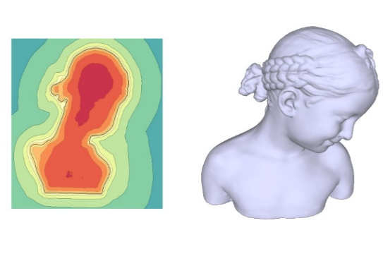

|
Yuqi Yang (杨钰琦)Ph.D. Candidate |
Biography
I am a third-year Ph.D. candidate of the Institute for Advanced Study, Tsinghua University, supervised by Dr. Baining Guo Currently, I'm a research intern at Microsoft Research Asia, supervised by Dr. Peng-Shuai Wang, Dr. Yang Liu and Dr. XinTong. Before that, I received my Bachelor's degree from University of Science and Technology of China University in 2018.
My research interest includes efficient 3D convolution and 3D unsupervised learning.
Publications
 |
Interpolation-Aware Padding for 3D Sparse Convolutional Neural Networks |
|  | Spline Positional Encoding for Learning 3D Implicit Signed Distance Fields |
 |
Unsupervised 3D Learning for Shape Analysis via Multiresolution Instance Discrimination |
PFCNN: Convolutional Neural Networks on 3D Surfaces Using Parallel Frame |